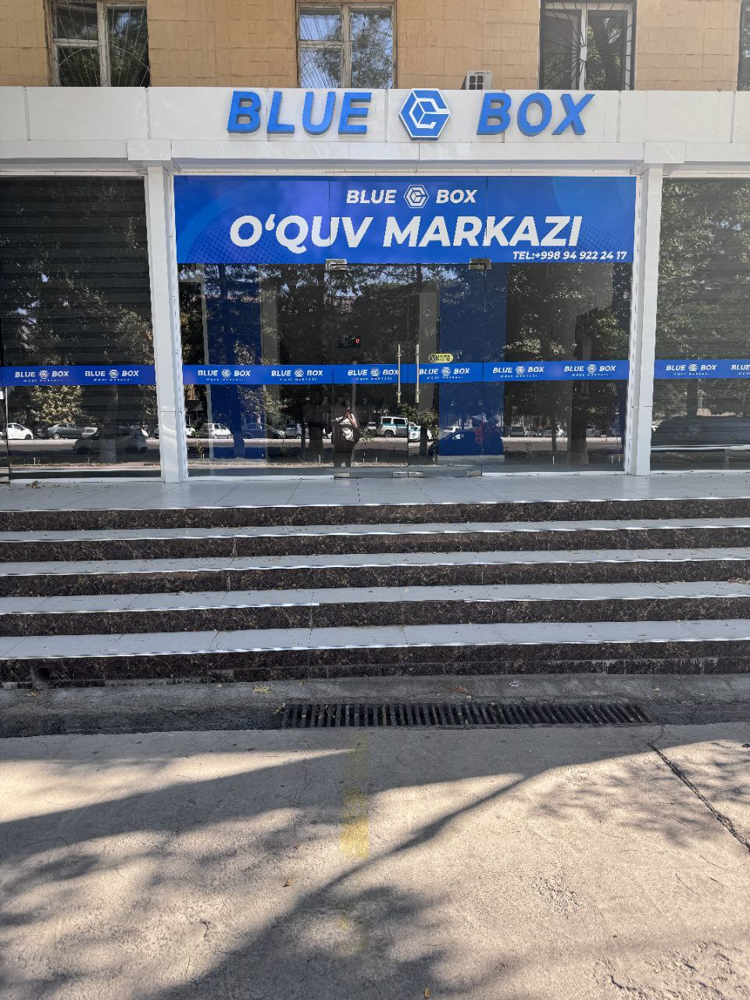

📚 MATEMATIKA KURSI: A'LO NATIJALARGA ERISHISH VAQTI KELDI! 🧮
Farzandingiz matematikadan qiyinchilikka duch kelayaptimi yoki imtihonlarga samarali tayyorgarlik ko‘rmoqchimisiz? Bizning Matematika Kursimiz aynan siz uchun!
🔢 Nega bizni tanlash kerak?
- Tajriba: O‘qituvchi Sardorbek yuqori malakaga ega va har bir o‘quvchi bilan individual yondashuvda ishlaydi.
- Moslashuvchan dastur: Har bir o‘quvchining ehtiyojlariga moslashtirilgan maxsus dastur. Maktab dasturini mustahkamlash va kengaytirishga qaratilgan.
- Natijalarga erishish: Yaqinlashayotgan imtihonlarga tayyorlanish, arifmetik va algebraik bilimlarni chuqurlashtirish, murakkab masalalarni yechish bo‘yicha strategiyalar.
- Qulay vaqt: Darslar kechki vaqtlarda o‘tiladi, shuning uchun maktabdan keyin qulay qatnashishingiz mumkin.
📊 Kurs natijalari:
- O‘quvchilarimizning 90% dan ortig‘i imtihonlarda yuqori ball olishadi.
- Matematika bo‘yicha ishonch va mantiqiy fikrlash qobiliyati rivojlanadi.
🎯 Kimlar uchun:
- 9-sinf va undan yuqori sinf o‘quvchilari, imtihon tayyorlovchilari va bilimlarini mustahkamlashni xohlovchi har qanday kishi uchun.
⚠️ Joylar cheklangan!
Hoziroq ro‘yxatdan o‘ting va farzandingizning muvaffaqiyatli kelajagini kafolatlang!
📞 Biz bilan bog‘laning:
Telefon: +998 93 165 40 41
Telegram: @Sardorbek4041
🌐 Manzil:
Angren shahar, BLUE BOX o'quv markazi.

🕒 Dars vaqti:
Kechki soatlar.